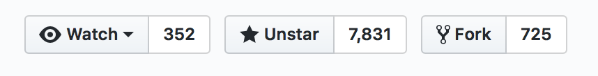
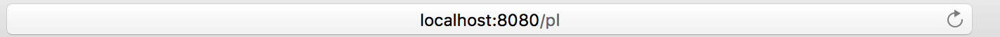
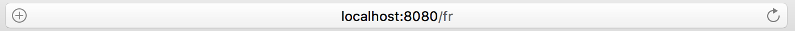

Grav
Modern open source flat-file CMS

Zalety
- Flat-file CMS
- Użycie Markdown do tworzenia treści
- Łatwa instalacja
- Duże możliwości zarządzania treścia
- Internacjonalizacja
- Łatwe kopie bezpieczeństwa
- Manipulacja mediami takimi jak zdjęcia
- Łatwe tworzenie motywów
- Admin Panel
- Brak konieczności używania bazy danych
- Łatwiejsza i przyjemniejsza instalacja
- Duże możliwości konfiguracji ze względu na użyte technologie: YAML, Twig, Markdown
- Łatwe skryptowanie oraz automatyczne zarządzanie przez zewnętrzne programy
- Możliwość tworzenia treści w tekstowy sposób
- Wersjonowanie
- Możliwość exportu z innych narzędzi
- Brak bazy danych
- PHP 5.5.9 minimum
- Działa na PHP 7
Duże możliwości zarządzania treścia
- Markdown lub HTML
- Automatyczne linkowanie stron
[Linked Content](../path/slug/page)
Customowe pola
Łatwe zarządzanie tagami czy tematami
Internacjonalizacja


- Konfiguracja języka w calości w kodzie
- Automaczyne wyciąganie języka z query params
- Każde tłumaczenie to po prostu plik płaski
Backups
tar -cvf "$(date '+%y-%m-%d').tar.gz" grav/
Automatyczne obrabianie zdjęć
Cache przy użyciu Symfony Doctrine
Łatwe używanie zdjęc w treści

Rozszerzanie już istniejących
Użycie dowolnej biblioteki CSS
Język templatów Twig daje duże mozliwości
Opcjonalny panel zarządzania stworzony przez twórców
Zarządzanie użytkonikami, treścią, tagami
Łatwo rozszerzalny